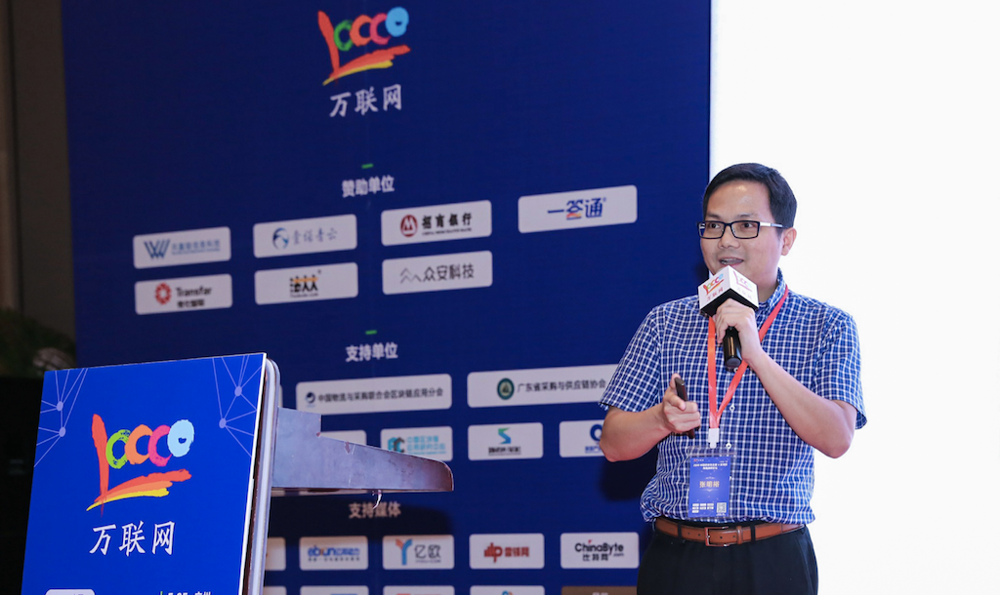
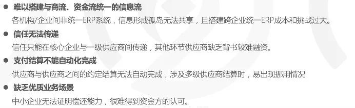
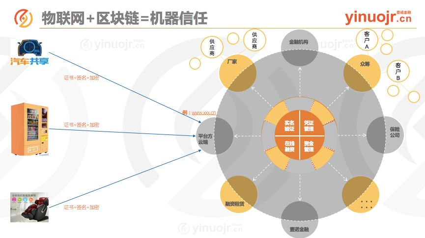
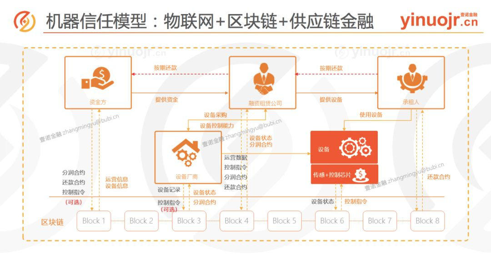
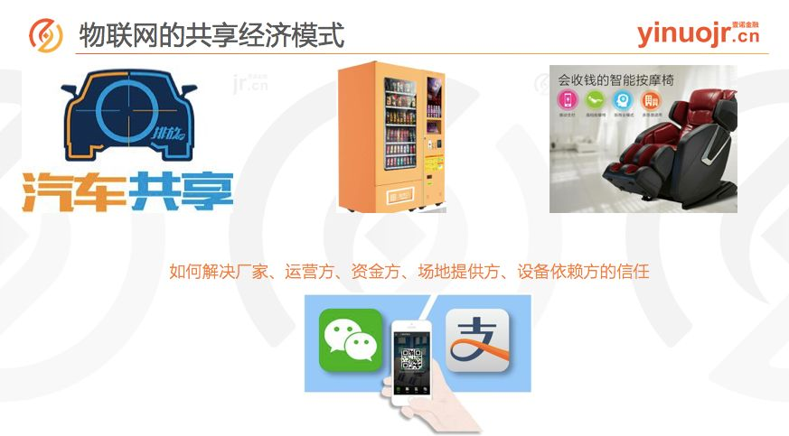

张明裕:物联网+区块链—供应链金融领域新机遇
5月25日，《2018中国供应链金融+区块链创新高峰论坛》在广州盛大开启，WeShare链副总裁、壹诺金融总裁——张明裕受邀出席盛会，并发表演讲。

（张明裕在演讲现场）
众所周知，区块链技术作为时下最火的技术之一，其技术架构与核心理念，已经引起了全球范围内的火热关注，各个领域的从业者也在开始积极思考，如何引入区块链技术并解决行业痛点等相关问题。

2017年5月，WeShare链旗下首款“区块链+供应链金融”产品——壹诺金融在贵阳首发，创新的将区块链技术与供应链金融相结合，有效的解决了小微企业融资难，融资贵等难题，让全产业链的融资效能与资金流转效率得到大幅提升。
壹诺金融通过分布式的账本技术，将记录在区块链上的应付账款，通过付款承诺与应收账款债权转让的形式，将核心企业的付款承诺在链条上的多级供应商间形成流转，传递核心企业信用给需要融资的中小企业，再通过智能合约技术，在核心企业付款之后，资金在多个供应商间快速完成自动化资金清算，保证交易方约定的付款时间按时完成资金清算，保障还款来源，使得融资触手可得。
不仅如此，演讲现场张明裕还特别表示：“应收账款凭证的多级流转只是区块链+供应链金融应用的开始，并不是唯一的模式和场景。区块链+供应链金融还有很多模式和应用，例如：物联网+区块链的创新应用模式。”

什么是物联网+区块链的创新应用模式？
以自动售贩机为例：假设一台自动售贩机为两万块钱，如果一家企业想抢在一个城市里面铺一千台，也就是2000万，这2000万如果是贷款的话，谁干借给他？如果通过区块链和物联网结合，银行或资金方就能够有效的知道了这些设备的使用情况和企业的经营情况，打破了信息不对称的问题，放款不放款都有了一个明确的依据。
简单来说，就是把区块链与物联网设备以及互联网设备结合，将这些设备的实时地理位置和使用情况等信息录入区块链。这样一来，银行或资金方就知道了这个企业的生产经营情况、用电情况、开机情况等，审核时即使不用财务报表，就可以知道这个企业的生产经营情况。

以此类推，像共享汽车的保险支付、智能按摩椅、商场的个人KTV唱吧等，凡是能够通过消费者扫码就能够使用起来的设备，都可以纳入到通过“物联网+区块链”打造的机器信任范围里。从而为银行或企业带来新的、有效的融资、租赁、放款方案。

区块链目前还处在发展阶段，还有很多可能等待着我们去探索。未来壹诺金融可能会涉及物联网领域，将供应链金融、物联网通过区块链结合在一起，从而创造更多社会价值。而在这个探索过程中，WeShare将会为壹诺金融提供强大的技术支撑，将模式的创新、技术的应用真正结合起来，真正解决场景里的实际问题。